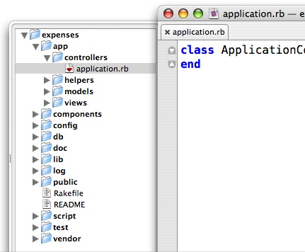

Introduction to Ruby on Rails
Dave Bryson
Lead Information Systems Engineer, MITRE
What we'll do...
- Rails History
- Install and Setup
- Ruby Language
- Rails
History
- Born as the result of a project
- Released July 2004
- Open-Source (MIT)
- David Heinemeier Hansson and 37 Signals
- Opinionated Software
- DRY principal
- Full stack framework
Install and Setup
- Get Ruby: http://www.ruby-lang.org/en/downloads/
- Get Rails:
gem install rails -y
gem install rails -p http://gatekeeper-w.mitre.org - Install a database
IDEs
- Komodo Edit (cross-platform)
- Aptana RadRails (cross-platform)
- NetBeans (cross-platform)
- IntelliJ (cross-platform)
- E Text Editor (Windows)
- MacroMates TextMate (Mac)
- JEdit (cross-platform)
- Emacs, Vi (cross-platform)
Ruby
- Interpreted. Garbage Collection
- Cross Platform
- Dynamic Typing
- Everything is an Object
- Focus on Simplicity
String
a = String.new("hello")
b = "Hello"
b.methods.sort
'hello'
"Hello"
greeting = 'Hello + ' ' + 'Dave'
name = "Dave"
greeting = "Hello #{name}"
"dave".upcase!
"".empty?
Numbers
x = 2
y = 3.01
5.to_s
10.times do |value|
puts "Number: #{value}"
end
25.downto(10) do |value|
...
end
Symbols
:dave
:dave.object_id
Symbols are:
- immutable
- not garbage collected
- used a lot for hash keys
Array
a = Array.new
a = []
# Create
b = [1,2,"dave",'a']
b << "hello"
# Read
b[2]
b[1,3]
# Update
b[2] = "bob"
# Delete
b.delete(2)
b.each do |value|
puts value
end
Hash
a = Hash.new
a = {}
# Create
b = {:one => 1, "name" => "dave"}
# Read
b["name"]
# Update
b["name"] = "Bob"
# Delete
b.delete(:one)
b.each |k,v|
puts "Key: #{k} Value: #{v}"
end
Boolean
- Objects evaluate to true EXCEPT false and nil
- TrueClass, FalseClass
x = "test"
x.nil?
If and Unless
p = Person.new
if p
...
end
x = 2
if x == 2
...
elsif x == 3
...
else
...
end
|
balance = 10
if not balance == 0
# spend some money!
end
unless balance == 0
# spend some money!
end
|
case
case x
when 2
...
when 3..6
...
else
end
Object is the parent of all
o = Object.new o.methods.sort o.respond_to?(:hello) o.send(:methods)
Class
class Person end p = Person.new p.methods
Instance Methods and Variables
class Person
attr_accessor :first, :last
def initialize(fn,ln)
@first = fn
@last = ln
end
def fullname
"My name is #{@first} #{@last}"
end
end
Class Methods and Variables
class Video
@@mime_type = 'video/mpeg'
def Video.converter(input)
puts "Convert video here..."
end
end
Video.converter(...)
Better yet use self
def self.converter(input)
...
Lab
Build a phonebook class. With the class you should be able to:- add a lastname and phone number
- list all lastnames and phone numbers
- get a phone number given the lastname
hint: use a hashtable
Inheritance
class Human
def walk
puts "hey I'm moving"
end
end
class Person < Human
end
Modules
Modules don't have instances!| Mixin | Namespace |
|---|---|
module Transporter
def move
puts "i'm moving..."
end
end
class Human
include Transporter
...
|
module Vehicle
class Truck
end
end
Vehicle::Truck.new()
|
Code Blocks
Attach a method (block) to another method
def test_yield
puts "Start"
yield
puts "Stop"
end
test_yield{ puts "in the middle"}
test_yield do
puts...
end
Method missing
class Person
def method_missing(name)
puts "don't know what #{name} is!"
end
end
p = Person.new
p.yo
Lab
Write a module named PhoneBookHelper that provides a method called "print_info".
Given a lastname and phone number, "print_info" will pretty print the information. Use this module in your PhoneBook class.
Rails
- Convention over Configuration
- MVC
- DRY
- Stay in Ruby
- Fast development cycle
MVC flow
Request Cycle

Directory Structure
|  |
Lets generate an app:
rails myblog -d 'mysql'
|
Rake
- like Make or Ant
- automate tasks
- "rake -T"
- Can add your own under lib/tasks
Environment
- development
- production
- test
Scripts
- about
- console
- generate
- plugin
- server
- runner
What we'll build...
- Simple Blog
- Users and Articles
- Authentication
Controller Environment
params[]
@value = params[:name]
@value = params[:user][:lastname]
session[]
id = session[:user_id]
flash[]
# in the controller
flash[:notice] = "My logic is undeniable"
# in the view
<%= flash[:notice] %>
logger.info(), warn(), error()
Writing a Controller
class BlogController < ApplicationController
def index
# Dummy data for now...
@entries = ["a","b","c","d"]
render :action => 'index'
end
end
http://localhost/blog or http://localhost/blog/index
Rendering
# Render an action
render :action => "show"
# Render the partial _details.html.erb
render :partial => 'details'
# Render text
render :text => "Hello World"
# Render JSON
render :json => {:name => "dave"}
# render XML
render :xml => person.to_xml
Redirect
# Redirect to another action in the same controller
redirect_to :action => :index
# Redirect to another controller and action
redirect_to :controller => :store, :action => :buy, :id => 1
# Redirect to a URL
redirect_to "http://mitre.org"
Why redirect versus render?
View
- Responsible for rendering the response
- Controller decides what view to use
- part of ActionPack
Templates
- Where we mix html and a little code
- live in "app/views/{controller_name}/{action}"
- have access to the same variables as the controller ( params, session, etc...)
- Pass instance variables from controller to template "@value"
- mime-types: html, json, xml, js, iphone
index.html.erb
index.xml.erb
index.iphone.erb
Template tags
- Output the code to the page:
<%= ruby code %>
- Evaluate Ruby code without output:
<% code %>
@people = Person.find(:all)
<html>
<body>
<% for person in @people %>
Name: <%= person.name %>
<% end %>
...
Layout
- Used for the common "shell" of your app
(nav bar, footer, etc...) - Has access to same data
- Must contain
<%= yield %>
- Each controller may have it's own layout.
"HelloController -> layouts/hello.html.erb" - A template named "application.html.erb" will serve all
Helpers
- Keep logic out of the templates (html)
- helpers are written as methods in a module
- see "app/helpers/{controller name}_helper.rb"
- Rails comes pre-loaded with a lot of useful helpers
# UrlHelper
<%= link_to 'home', :controller => 'main', :action => 'index' %>
Worth the time to become familiar with the docs!
Example Helper
app/helpers/application_helper.rb
module ApplicationHelper
def login_logout_menu
if session[:user_id]
link_to "Logout", :controller => "accounts",
:action => "logout"
else
link_to "Login", :controller => "accounts",
:action => "login"
end
end
end
Models
- Each Database table maps to a Ruby class
- Table names are plural, models (classes) are singular
- All tables contain a unique id as the primary key
- Most popular databases supported: (mysql,postgres,oracle,etc...)
- Tables are created with migrations
Model Example
create table articles(
title varchar(255),
body text
)
class Article < ActiveRecord::Base
end
a = Article.new
a.attributes
Migrations
- Way to evolve your database
- Stay in Ruby
- Database independent
Transformations
- create table
- drop table
- add,remove,rename a column
- add, remove an index
- use 'execute' to run raw SQL
Creating the Articles Table
class ArticlesTable < ActiveRecord::Migration
def self.up
create_table :articles do |t|
t.string :title
t.text :body
t.timestamps
end
end
def self.down
drop_table :articles
end
end
Create
a = Article.new
a.title = "Hello there"
a.body = "This is the post..."
a.save
a = Article.create({:title => "hello there",
:body => "this is a post..."})
Read
Article.find(1)
Article.find([1,3,7])
Article.find(:first, :conditions => ["title = ?","hello there"])
Article.find(:all, :conditions => ["title = ?","Hello there"],
:order => "title ASC", :limit => 10)
# Dynamic finders
Article.find_all_by_title("Hello There")
Article.find_by_title("dave")
Update
a = Article.find(1)
a.update_attribute(:title, "Hello there changed")
a.update_attributes({:title => "Changed!", :author => "bob"})
Delete
- Delete:
- Destroy:
- Best to use destroy
Article.destroy(1)
Article.destroy([1,2,3])
Creating Articles
Validation
- Model lifecycle
- Many helpers included
class Article < ActiveRecord::Base
validates_presense_of :title
end
Lab
Create a "show" action and view.
When a user clicks on the title of an article, show the article on a separate page.
Model Associations
- Support: 1-1, 1-many, many-many
- maps to: has_one, has_many, has_and_belongs_to_many
- declare it and let rails do the work
- belongs_to on the model who's table contains the foreign key
Blog Association
Each User has many Articles
class User < ActiveRecord::Base
has_many :articles
end
class Article < ActiveRecord::Base
belongs_to :user
end
# What's added
user.articles
article.user
Authentication
- Basic
- Sessions
- Controller Filters
Basic
class ArticleController < ApplicationController
UN, PW = "dave", "dave"
before_filter :authenticate
private
def authenticate
authenticate_or_request_with_http_basic do |un,pw|
un == UN && pw == PW
end
end
end
Session
- Client needs Cookies
- message digest using SHA(secret_key, data)
- Can't be tampered with on the browser
- Limit 4K
- DON'T STORE ENTIRE OBJECT IN A SESSION
Filters
- Wrap your actions
- Types:
- before_filter
- after_filter
- around_filter
- options:
:only => [:add,:create] :except => [:create] - Can also skip filters
Testing
- Fixtures: define test data
- Functional: Test Controllers
- Unit: Test Models
- Integration: All together now...
REST and Scaffold
Build an API fast...
# Do this all on one line...
./script/generate scaffold User \
username:string passwd:string \
email:string created_at:datetime updated_at:datetime
# The client
require 'active_resource'
class User < ActiveResource::Base
self.site="http://localhost:3000"
end
Plugins
- Extend just about any part of Rails
- self-contained
- try:
./script/plugin
Deploying the app
- Apache/Nginx -> Mongrel
- Apache mod_rails (Passenger)
- or just Mongrel
Misc...
- JRuby
- Stand alone ActiveRecord
Keep learning
- Write code!
- Study open-source (especially Rails)
- READ THE DOCS!
Other Sources
- Ruby for Rails (David Black)
- Programming Ruby (Dave Thomas)
- Rails Recipes (Chad Fowler)